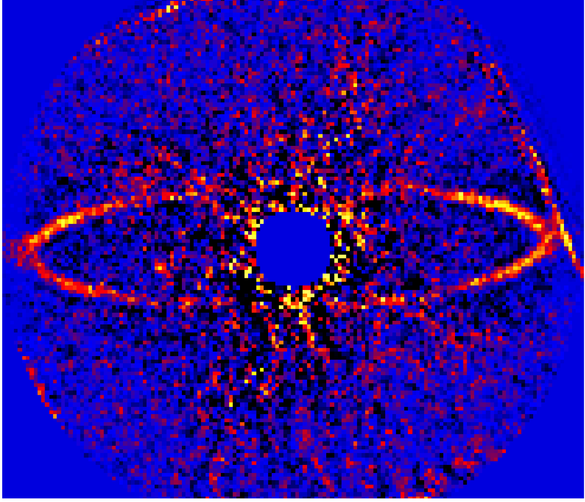
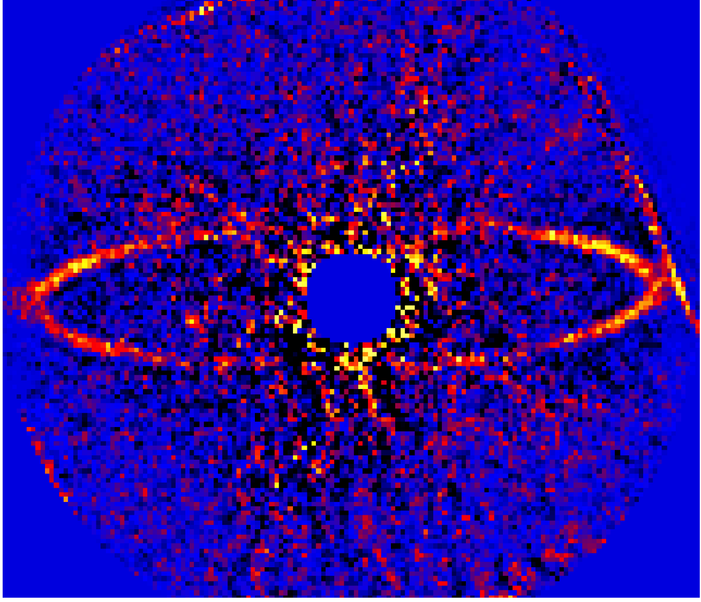

CHARIS DATA REDUCTION PIPELINE¶
Software package for CHARIS, designed to build calibration files for the CHARIS integral-field spectrograph for the Subaru telescope and to extract data cubes from sequences of raw reads.
Software package for CHARIS, designed to build calibration files for the CHARIS integral-field spectrograph for the Subaru telescope and to extract data cubes from sequences of raw reads.
